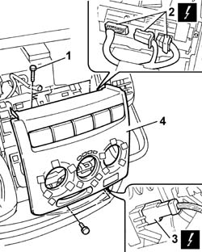
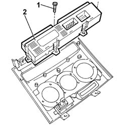
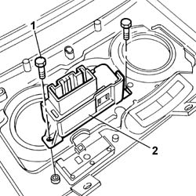

7065C10 AIR CONDITIONING CONTROL PANEL - R+R
- Path
- Procedures > 70 FITTINGS > 7065 SEAT BELTS AND ACCESSORIES > 7065C ACCESSORIES AND DECORATIONS > 7065C10 AIR CONDITIONING CONTROL PANEL - R+R
- Kind
- repair procedure (removal / refitting; the operation number is the code)
- Applies to
- all engines; all production periods
- Interactive page
- https://sloeber94.github.io/elrnDB-fDct/en/#/244001546
Applies to: all engines; all production periods
 Removing
Removing
 Refitting
Refitting- Disconnect the negative battery terminal.
Op. 7040A78 RADIO COMPARTMENT BOX R R
Op. 7040A72 UPPER CENTRAL DOCUMENT HOLDER ON DASHBOARD - R.R .
- Remove the air recirculation control cursor.
1. Undo the fixing bolts.
2. Disconnect the electrical connections for the signal and service switches support.
 | Description | Connector |
|---|---|---|
2 | Switch control panel | H090A |
| Description | Connector |
|---|---|---|
2 | Switch control panel | H090B |
| Description | Connector |
|---|---|---|
2 | Steering column switch unit | H005C |
| Description | Connector |
|---|---|---|
2 | Switch control panel | H090D |
3. Disconnect the electrical connection for the air conditioning on switch.
| Description | Connector |
|---|---|---|
3 | Climate control sytem control unit | M070 |
4. Remove the switch trim complete with control panel and air conditioning on switch.

Applies to: all engines; all production periods
1. Undo the fixing bolts.
2. Remove the control panel.

Applies to: all engines; all production periods
1. Undo the fixing bolts.
2. Remove the air conditioning on switch

Applies to: all engines; all production periods
Refitting
Removing- Position the air conditioning on switch and tighten the fixing bolts.
- Position the control panel and tighten the fixing bolts.
- Connect the electrical connections.
| Description | Connector |
|---|---|---|
. | Climate control sytem control unit | M070 |
| Description | Connector |
|---|---|---|
. | Switch control panel | H090A |
| Description | Connector |
|---|---|---|
. | Switch control panel | H090B |
| Description | Connector |
|---|---|---|
. | Switch control panel | H090C |
| Description | Connector |
|---|---|---|
. | Switch control panel | H090D |
- Position the switch trim and tighten the fixing bolts.
- Position the air recirculation control cursor.
Op. 7040A72 UPPER CENTRAL DOCUMENT HOLDER ON DASHBOARD - R.R .
Op. 7040A78 RADIO COMPARTMENT BOX R R
- Connect the negative battery terminal.
Topics linked from this page (3)
- 7040A72 UPPER CENTRAL DOCUMENT HOLDER ON DASHBOARD - R.R .
- 7040A78 RADIO COMPARTMENT BOX R R
- 7065C42 ASHTRAY (ONE) R+R
Topics that link to this page (23)
- 5010B24 UNDER-FACIA AIR DUCTS R R
- 5020A10 HEATER BOX - R+R
- 5020B22 HEATER CONTROL SUPPORT CONTROL (ONE) - ARRANGE
- 5040A80 EXPANSION/CONNECTION PIPE - R R
- 5040B22 AIR CONDITIONING SYSTEM DE-MISTER THERMOSTAT - R+R
- 5040B30 EXPANSION VALVE (TUBE ORIFICE) - R+R
- 5040C10 AIR CONDITIONER CONTROL SUPPORT - R+R
- 5040C30 FAN MOTOR - R+R
- 5040C50 AIR CONDITIONER HEATER RADIATOR - R+R
- 5040C56 CONNECTING PIPE BETWEEN TAP AND AIR CONDITIONING HEATER RADIATOR - R.R.
- 5040C58 AIR CONDITIONING HEATER RADIATOR TAP - R.R.
- 5040C64 A/C MANUAL CONTROL SWITCH (ONE) - R+R
- 5040D10 AIR CONDITIONER CONTROL SUPPORT - R+R
- 5040D22 CONTROL (ONE) OF AIR CONDITIONER CONTROL SUPPORT - ARRANGE
- 5040D47 AIR DISTRBUTION FLAP - AIR INTAKE/RECIRCULATION - TAP TRANSMISSION - R.R.
- 5040D64 AIR CONDITIONER MANUAL CONTROL SWITCH (ONE) - R.R.
- 5505A24 W/L AND SERVICE SWITCH MOUNT - R+R
- 5505C31 UNDER-FACIA WIRING - R R
- 7040A04 FACIA LOWER TRIM-R R
- 7040A10 L/H OR R/H FRONT SEAT (ONE) - R+R
- 7040A77 GLASS HOLDER ON FACIA TRIM - R R
- 7040A97 FACIA TRIM SUPPORT BEAM - R R
- 7040L17 PASSENGER COMPARTMENT FLOOR FRONT CARPET - R R